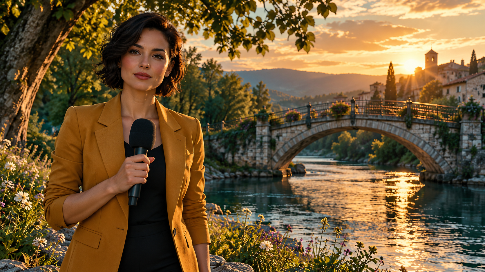
Moderner Blockbuster
Tiefer Kontrast, bläuliche Schatten und orangefarbenes Licht (Teal & Orange).
KI-generiertes Stilbeispiel · modern_blockbusterKI-generierte Bilder mit gemeinsamem Motiv. Statische Orientierung, keine echten Nachrichtenaufnahmen und keine Zusage eines bestimmten Providers. Bildformate variieren; Ausgabeformat separat wählen.
Zuordnung und verwendete Prompts

Tiefer Kontrast, bläuliche Schatten und orangefarbenes Licht (Teal & Orange).
KI-generiertes Stilbeispiel · modern_blockbuster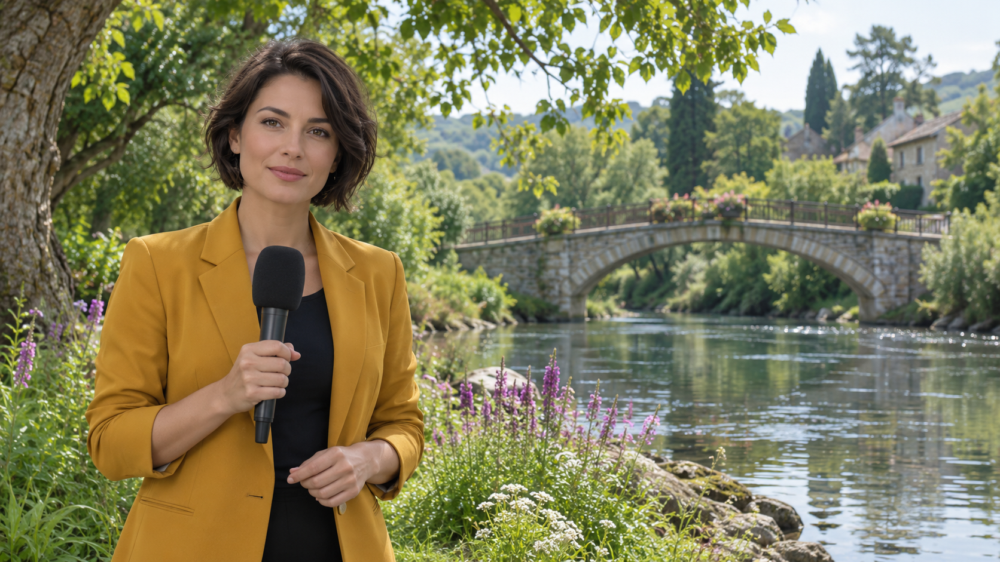
Gestochen scharfes, helles Bild mit natürlichem Tageslicht und weichem Bokeh-Hintergrund.
KI-generiertes Stilbeispiel · nature_documentary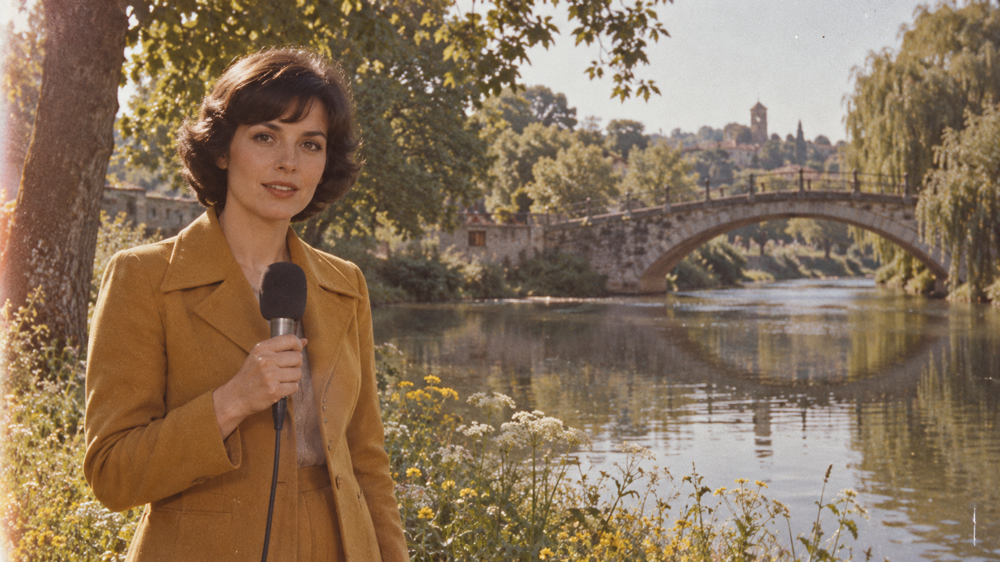
4:3-Format mit leicht verwaschenen Farben und sichtbarem Filmkorn.
KI-generiertes Stilbeispiel · vintage_retro_filmAnalogfilm-Anmutung; Beispielbild im Querformat, kein verbindliches 4:3-Ausgabeprofil.
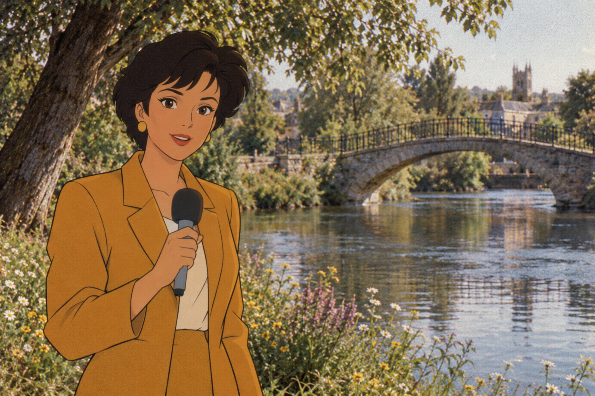
Gemütliche, reale Werkstatt mit Holztexturen, kombiniert mit einer handgezeichneten 2D-Figur.
KI-generiertes Stilbeispiel · pumuckl_hybrid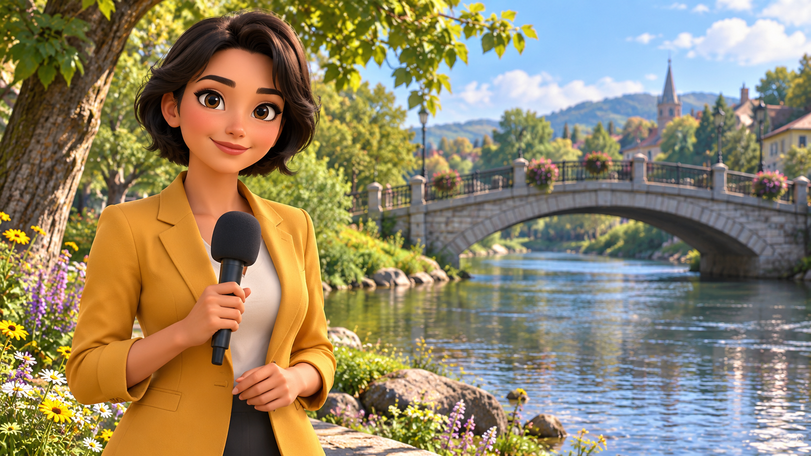
Große, ausdrucksstarke Augen, weiche Hautstrukturen und warme, leuchtende Farben.
KI-generiertes Stilbeispiel · pixar_disney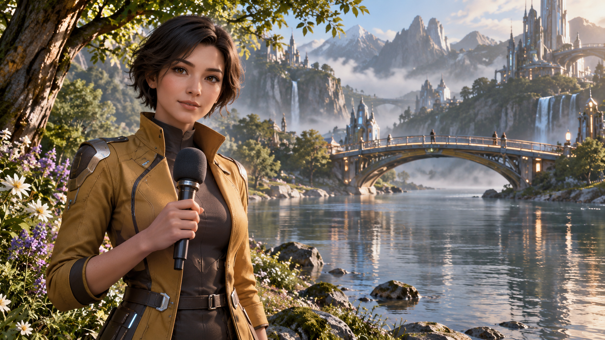
Extrem detaillierte Charaktere in einer düsteren, technisch perfekten Spielewelt.
KI-generiertes Stilbeispiel · gaming_cinematic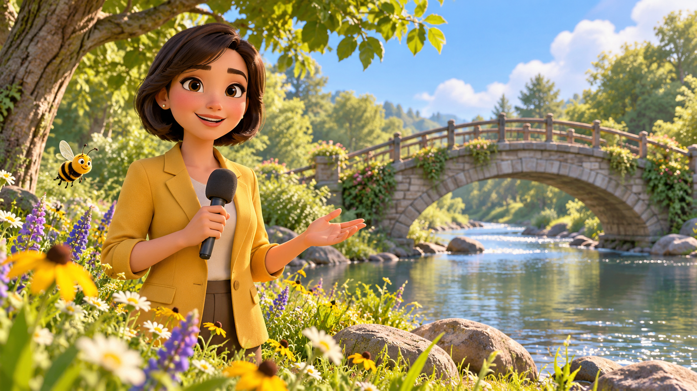
Plastische 3D-Insekten, extrem leuchtende Blumenfarben, Makro-Perspektive im Gras.
KI-generiertes Stilbeispiel · biene_maja_3d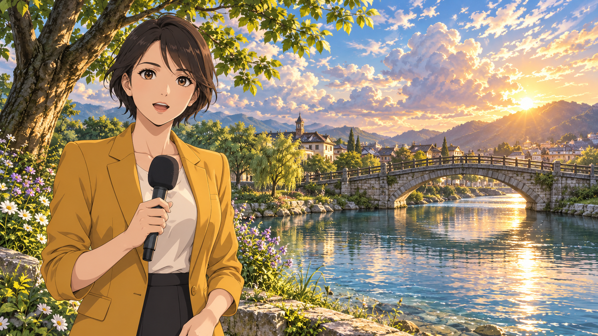
Detailreicher japanischer Zeichentrickstil mit dramatischem Himmel und Lichteffekten.
KI-generiertes Stilbeispiel · modern_anime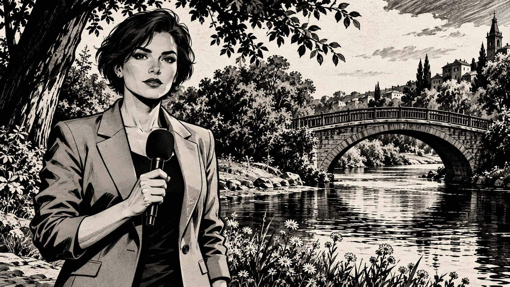
Harte, schwarze Tuschelinien, hoher Chiaroscuro-Kontrast und düstere Schatten.
KI-generiertes Stilbeispiel · graphic_novel_noir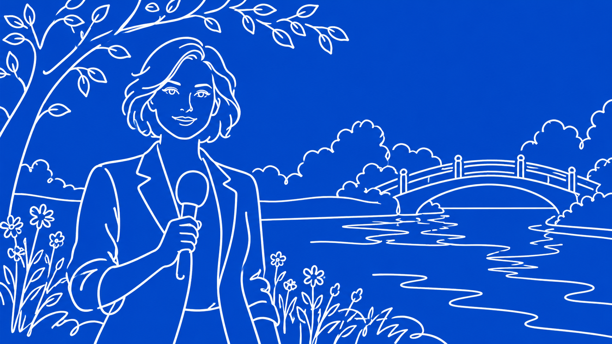
Eine einzige, durchgehende dicke weiße Linie auf knalligem, einfarbigem Hintergrund.
KI-generiertes Stilbeispiel · la_lineaWeiße Konturzeichnung; keine garantierte durchgehende Einzellinie.
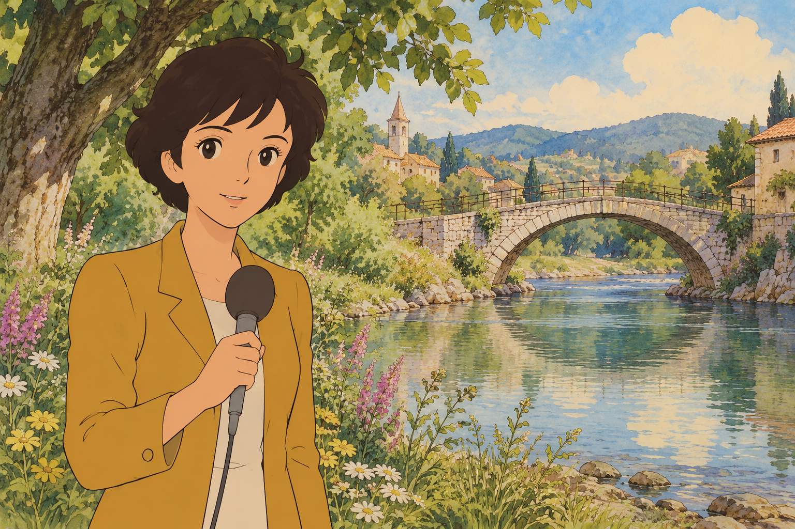
Weiche, warme Farben und handgemalte Aquarell-Naturhintergründe der Ur-Maja.
KI-generiertes Stilbeispiel · biene_maja_70s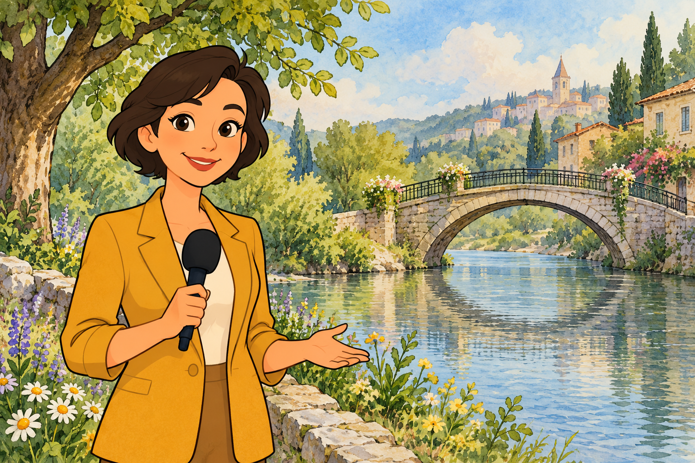
Komplett gezeichnete Welt mit sanften Aquarell-Hintergründen und klaren Tuschekonturen.
KI-generiertes Stilbeispiel · pumuckl_2d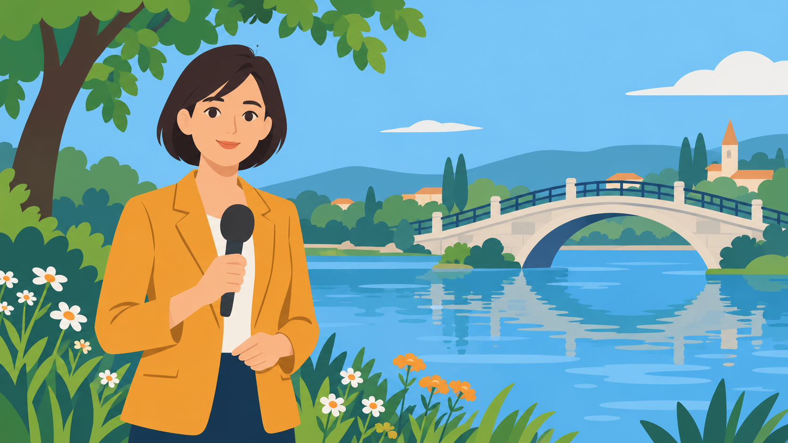
Minimalistisch, zweidimensional, klare geometrische Formen ohne Verläufe.
KI-generiertes Stilbeispiel · flat_designFlächige Illustration mit leichten Verläufen; kein strikt verlaufsfreier Vektornachweis.